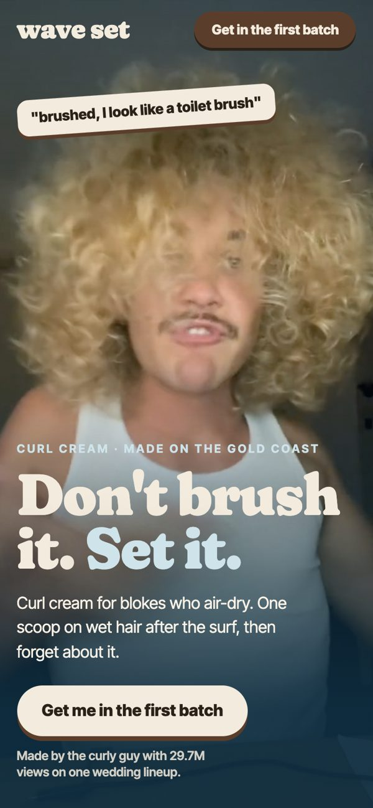
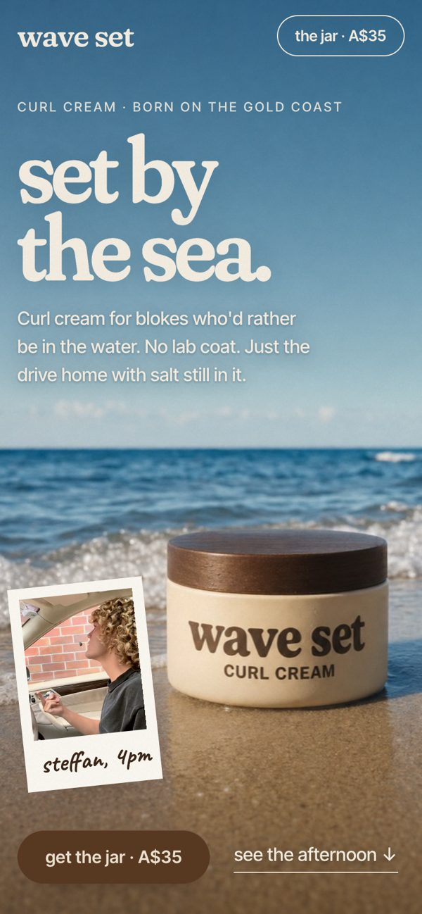
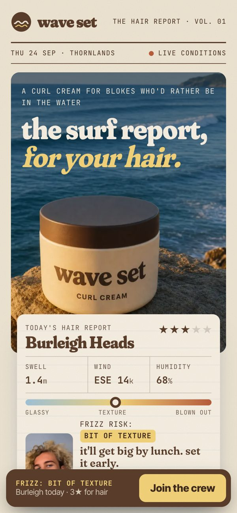
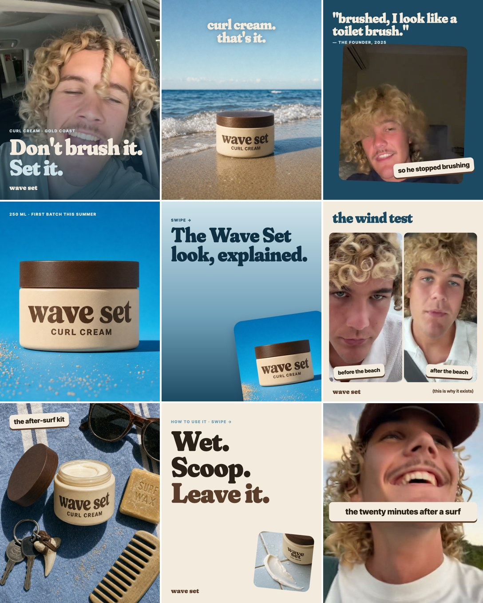

Wave Set · starter pack · Sept 2026
Sebastian asked us to build you a starter pack for Wave Set. In here: three live websites, six TikToks and an Instagram grid cut from your own videos, two short films, three voice notes, six docs and the questions we need you to answer.
Start here · 1 minute
Voice note from Wave Set HQ
Three live websites · three different bets
Each one takes a different position on the same brand. Open them on your phone.

Concept 1 · the founder site
You are the brand. Your curls as the hero video, your real quotes as stickers, a joke quiz ("What kind of curly are you?") and a first-batch waitlist. Nobody else in men's curl cream puts a founder's face and a sense of humour up front.
sebastiandoyle.github.io/waveset ↗

Concept 2
Every men's curl brand right now (BASED, No.113, Hairstory, Mermade) sells with a lab, a discount or a unit count. This site says so out loud: "Every other curl cream sells you a lab." Then it sells one Gold Coast afternoon instead, told through Steffan's own clips (outdoor shower, kayak, the southerly that took the umbrella). His curls are the proof, the way Wavy's founder built a seven-figure brand on his own hair.
sebastiandoyle.github.io/waveset-afternoon ↗

Concept 3
Every surfer on the coast checks the surf report before anything else, so this is a live surf report for your hair: real swell, wind and humidity for Straddie, Burleigh, Snapper, Currumbin and Thornlands, turned into a frizz risk, a set rating and today's dose. The frizz scale is calibrated on Steffan's own face, and a founding crew for batch 01 (100 jars) gives people a reason to sign up now and check back every morning.
waveset-hairreport.surge.sh ↗
Made from your own videos
Reasons to get curls, the salt test, your toilet-brush storytime, POV after the surf, the curl lineup and the drive-thru. Captions, sounds and timing are in the posting plan.
Planned as a grid: blues everywhere, and the cream jar is the one warm thing in it. There are also two carousels and three story templates.

Two short films
The Steffan File
A nature documentary about a rare creature: you. 52s
The feeling
What Wave Set is actually selling. 24s
Voice notes
Voice note 1
What we found and the line we built everything on. 1:08
Voice note 2
A surf report, for hair. 0:57
Voice note 3
The questions that decide what comes next. 1:01
Six docs
Doc 1
A scouting report on you. Eight things we noticed from 38 of your TikToks.
Doc 2
The aesthetic explained: name, colours, type, jar, photos, voice.
Doc 3
The six TikToks, the Instagram grid, the first two weeks and calendar hooks.
Doc 4
Markets, surf shops, barbers, competitor prices, the name question, budgets.
Doc 5
A Queensland supplier that'll put your label on a curl cream now, and the maths.
Doc 6
What we need from you to take the next step.
Every doc also has a PDF version (it's attached to the email too).
Answer the 20 questions (a voice note to Sebastian is fine) and we'll build out whichever direction you pick.
See the questions